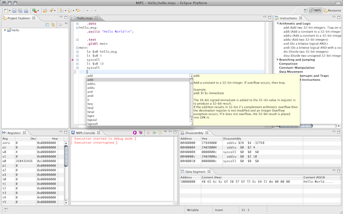

javaMIPS provides a complete MIPS Assembler development and debugging environment. It is implemented as a set of three plugins to the Eclipse IDE.
Authors
Sebastian Hack | Profile at Saarland University)
Kevin Streit (streit@cs.uni-saarland.de | Profile at Saarland University)
What does it look like
In the following screenshot you can see an overview over the main views of javaMIPS:
- The MIPS Editor supports the usual features like syntax highlighting, context sensitive (syntactical and semantic) code completion, MIPS instruction documentation, ...
- The Instructions View provides a grouped list of MIPS instructions. On mouse hover, the documentation of the corresponding instruction is shown.
- During a run of a MIPS application, The Registers View shows the current content of the processor registers. Additionally the registers that changed in the last step of execution are highlighted.
- The MIPS Console is responsible for output and user input. Additionally it acts as the interface to the debugger and provides buttons to control execution.
- The Disassembly and Data Segment Views show the generated machine code of the complete project. Upon assembly load or execution, every MIPS file in a project is taken and linked together to one big assembly file. The content of this is shown in these two views.
- Breakpoints are supported in two different ways: Setting breakpoints as usual by double clicking to the editor ruler. And inserting the special brk instruction.
- Additionally the plugins provide predefined Code Templates to ease the use of complex instructions like for example syscalls.

Installing javaMIPS
Download the sources
You can download this project in either
zip or
tar formats.
You can also clone the project with Git
by running:
$ git clone git://github.com/kevinstreit/javaMIPS